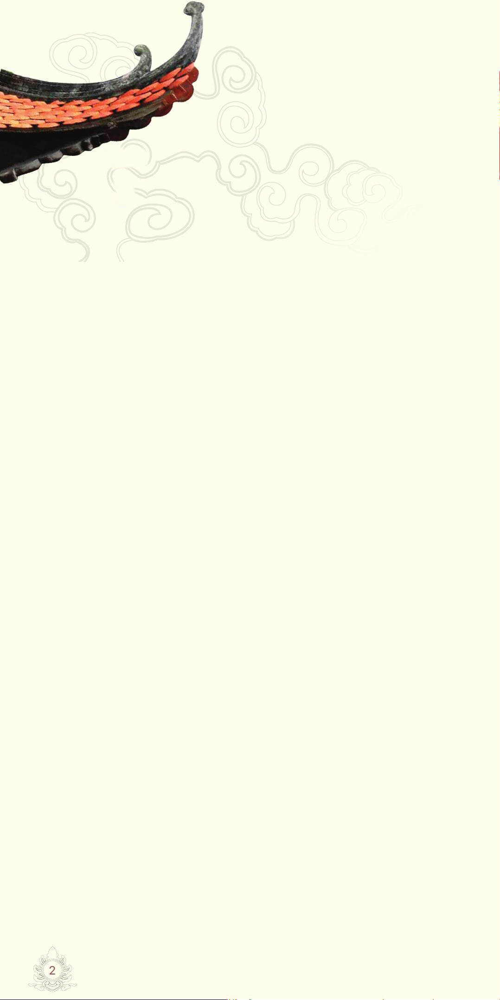
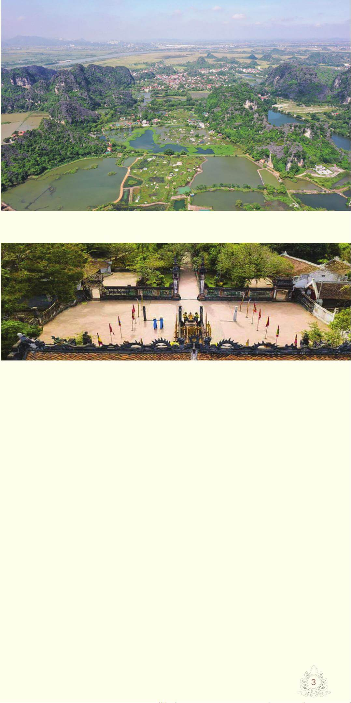

The Hoa Lư Ancient Capital historical and cultural site is a special national monument complex. It was at Hoa Lư that, for the first time in history, the centralized feudal state of Vietnam established its capital. It is the birthplace of the heroic achievements of three dynasties: the Đinh, the Early Lê, and the beginning of the Lý.
In 968, after reunifying the country, Đinh Bộ Lĩnh ascended the throne as Emperor, named the country Đại Cồ Việt, and set his capital at Hoa Lư, where he ordered the “building of citadel walls and moats, the construction of palaces, and the establishment of court ceremonial.” Continuing his work, in 980 Emperor Lê Đại Hành took the throne and had many magnificent palaces built.
In the context of the 10th century, when the country had only just won its independence and the centralized feudal government was still young, the two emperors’ choice of the rugged land of Hoa Lư as their capital reflected a strategic vision: it allowed them to build a formidable, impregnable fortress against enemies both within and without.
In 1010, in order to lay a solid and comprehensive foundation for the prosperity of an independent feudal state, Emperor Lý Thái Tổ moved the capital to the Đại La citadel, later renamed Thăng Long (present-day Hanoi). From then on, Hoa Lư became the ancient capital. Through the ups and downs of history, the palaces once adorned with gold and silver are no more.
According to tradition, after Lý Thái Tổ moved the capital, the Lý dynasty built a temple facing north to honor the national heroes who had built and defended the country. That Lý-era temple, however, no longer exists. Later dynasties continued to look toward Hoa Lư, restoring and adding many cultural and historical structures, so that today visitors who come to tour and pay their respects at the Hoa Lư Ancient Capital can gain a deeper understanding of a land that was once a renowned imperial capital and still preserves many splendid traces of its past.

Today, the Hoa Lư Ancient Capital includes more than 20 monuments related to the Đinh and Early Lê dynasties, representing a variety of places of worship: mausoleums, temples, shrines, palaces, and pagodas. Famous sites include Nhất Trụ Pagoda, the Temple of Princess Thục Tiết, and Kình Thiên Palace. Among them, the most representative and distinctive are the temples of Emperor Đinh Tiên Hoàng and Emperor Lê Đại Hành. These two structures were built and restored one after the other across many dynasties, yet they still strongly reflect the architectural style of the Later Lê period (17th century).